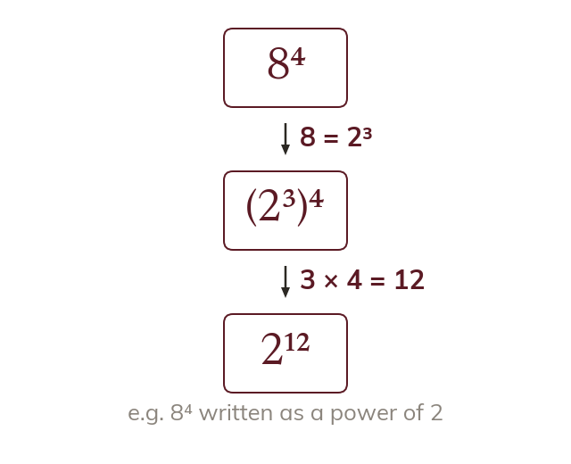

A base can be a power
A base that is a power can be written as one. The power law then multiplies the indices.
When the base is itself a power of a smaller number, it can be replaced by that power. The power law then multiplies the indices, so